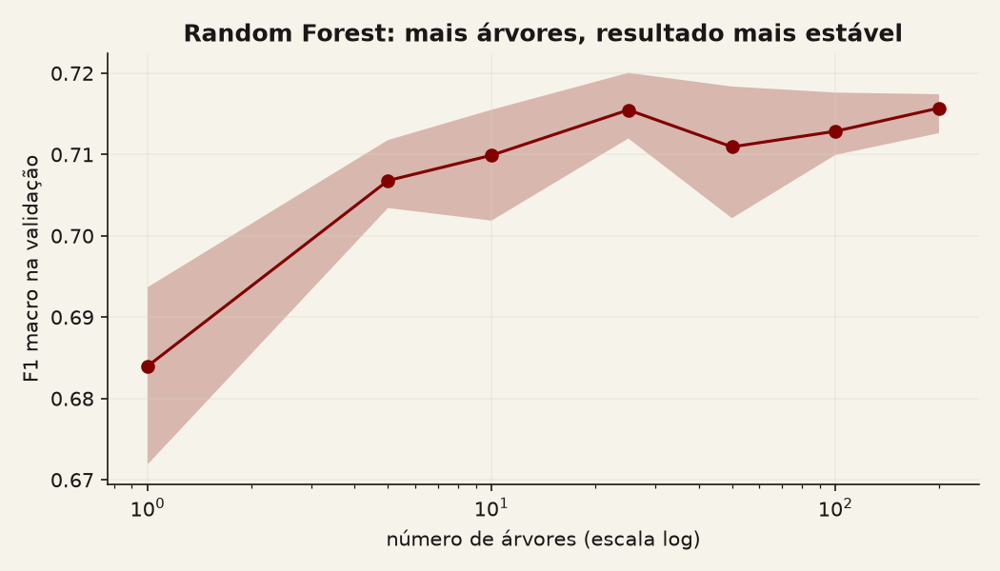
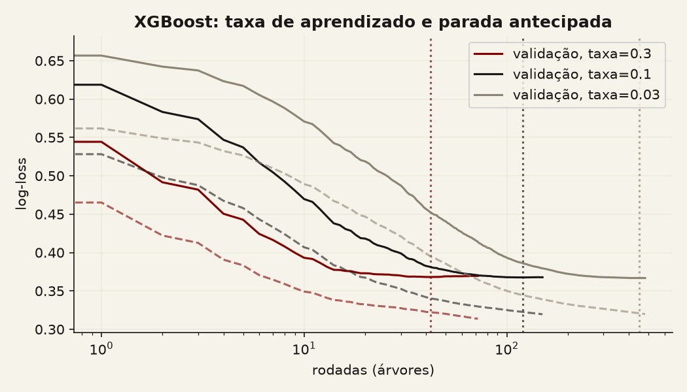
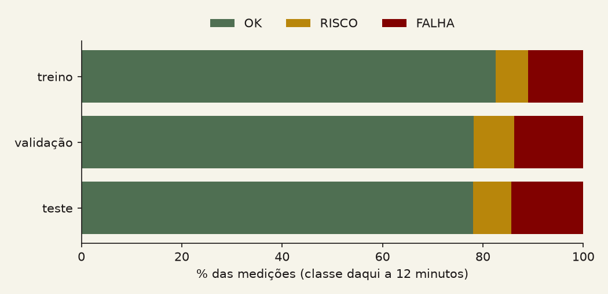
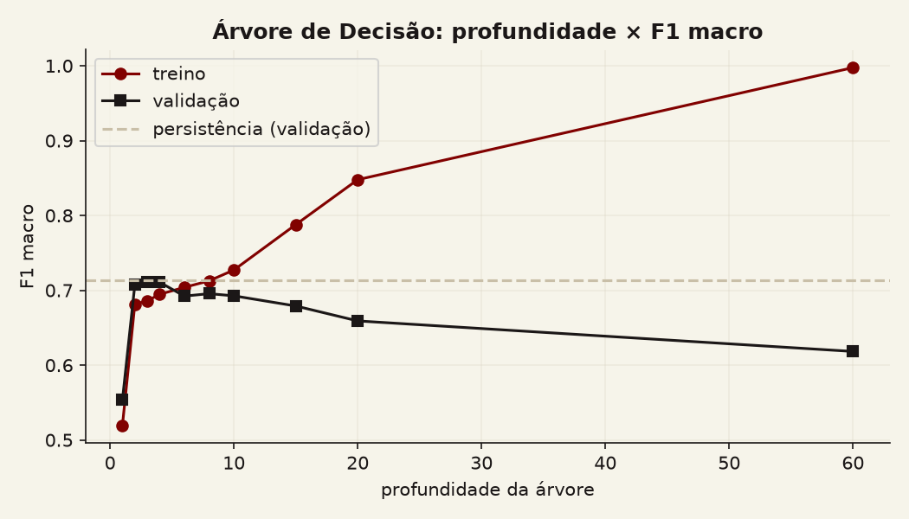
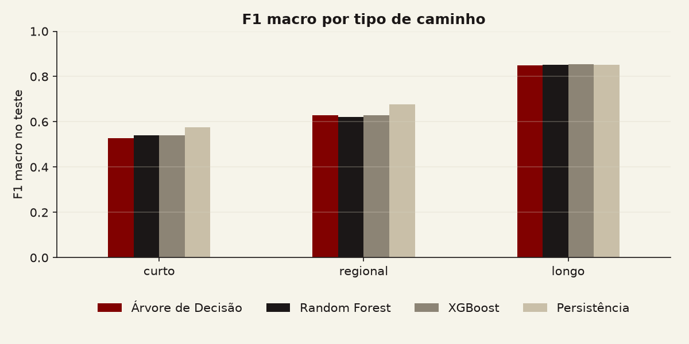

Aprendizado de máquina · Monitoramento de redes
Árvore, floresta ou boosting? Prevendo a degradação de uma rede 12 minutos antes
Explicamos Árvore de Decisão, Random Forest e XGBoost para quem já programa em Python, colocamos os três para prever o estado de caminhos reais da internet 12 minutos à frente e comparamos com a regra mais simples possível: repetir o estado de agora.
O problema: avisar antes que o caminho degrade
Quem opera uma rede quer saber se um caminho entre dois pontos da internet está bem, piorando ou quebrado. Um ping mede o tempo de ida e volta de um pacote, o RTT (round-trip time). Mas RTT alto, sozinho, não quer dizer problema: um caminho entre o Iraque e o Japão leva 315 ms todos os dias e está saudável, enquanto um caminho dentro de Auckland que sai de 1 ms para 12 ms está com algo errado.
Por isso, no projeto integrador do grupo, cada medição recebe uma classe comparando o RTT com o normal daquele mesmo caminho: OK (nada a fazer), RISCO (observar) ou FALHA (investigar). Saber a classe de agora é útil. Saber a classe daqui a 12 minutos seria melhor: daria tempo de agir antes.
Neste artigo vamos treinar três modelos de aprendizado de máquina (programas que aprendem regras a partir de exemplos, em vez de regras escritas à mão) para responder: olhando a medição de agora, qual será a classe deste caminho 12 minutos depois? E vamos comparar os três com a regra que qualquer pessoa usaria sem modelo nenhum, a persistência: "daqui a 12 minutos vai estar como está agora". Ao final você vai saber como cada modelo funciona, como compará-los de forma justa e quanto um modelo de fato acrescenta a essa regra simples.
Modelo 1
Árvore de Decisão
Um exemplo antes da teoria
Vamos começar treinando uma árvore com apenas 3 níveis de perguntas sobre a medição de agora. Mesmo pequena, ela já chega a F1 macro de 0,711 na validação, praticamente igual à persistência (0,713), e dá para ler as regras que aprendeu:
- "Se o RTT está a até 3,4 desvios do normal e houve no máximo 1 desvio moderado nas últimas 5 medições, daqui a 12 minutos o caminho estará OK." É o caso de 77% das medições: a rede passa a maior parte do tempo no próprio normal.
- "Se o RTT está a mais de 3,4 desvios do normal e o jitter não está alto, daqui a 12 minutos o caminho estará em FALHA." Um desvio grande e estável costuma continuar.
- "Se o RTT está a mais de 3,4 desvios, mas o jitter está alto e o desvio não vinha se repetindo, o caminho volta a OK." É um pico isolado: ele tende a passar.
Deslize para o lado para ver a figura inteira, ou toque nela para ampliar.
O que é e como funciona
Uma árvore de decisão faz uma sequência de perguntas do tipo "atributo ≤ limite?" até chegar a uma resposta. Para construí-la, o algoritmo testa, em cada ponto, todas as perguntas possíveis e escolhe a que melhor separa as classes. Depois repete o processo em cada lado, até um critério de parada.
- Nó e folha
- Um nó é uma pergunta. Uma folha é o fim do caminho, onde a árvore dá a resposta (a classe mais comum entre os exemplos de treino que chegaram ali).
- Critério de divisão (Gini ou entropia)
- Mede o quanto um grupo está "misturado". Um grupo só de medições OK tem impureza zero. A melhor pergunta é a que deixa os dois grupos resultantes mais puros.
- Profundidade
- O número máximo de perguntas em sequência. Mais profundidade permite regras mais detalhadas.
- Overfitting e variância
- Uma árvore profunda demais pode decorar o treino (overfitting): cria regras para casos isolados que não se repetem em dados novos. Ela também tem alta variância: mudar um pouco os dados de treino pode mudar bastante a árvore. Vamos ver isso acontecer no experimento.
- Poda
- Remover ramos que quase não melhoram o acerto, para deixar a árvore mais simples e menos sujeita a overfitting. No scikit-learn isso é o parâmetro
ccp_alpha[6].
Aprofundamento: a fórmula da impureza de Gini
Se num nó a fração de exemplos da classe k é pk, a impureza de Gini é:
G = 1 − Σk pk2
No nosso treino, a raiz tem 83% de OK, 7% de RISCO e 11% de FALHA: G = 1 − (0,83² + 0,07² + 0,11²) ≈ 0,30. Com as três classes em partes iguais, G chegaria a 0,67, a mistura máxima para três classes. Com 100% de uma só classe, G = 0. A entropia, H = −Σ pk log2 pk, mede a mesma ideia com outra escala. Em cada nó, o algoritmo escolhe a pergunta que mais reduz a impureza média ponderada dos filhos.
Quando faz sentido: quando é preciso explicar cada decisão, quando a latência tem que ser mínima, ou como ponto de partida antes de modelos mais complexos.
Modelo 2
Random Forest
Se uma árvore sozinha muda muito com pequenas mudanças nos dados, uma ideia natural é treinar muitas árvores diferentes e fazer uma votação. É isso que a Random Forest faz[1]. Cada árvore erra de um jeito, e a maioria tende a acertar.
Para que as árvores sejam diferentes entre si, a Random Forest usa duas fontes de sorteio:
- Amostra bootstrap e bagging
- Cada árvore é treinada numa amostra bootstrap: um sorteio com reposição do mesmo tamanho do treino, em que alguns exemplos aparecem repetidos e outros ficam de fora. Treinar modelos em amostras bootstrap e juntar os votos se chama bagging (bootstrap aggregating).
- Seleção aleatória de atributos
- Em cada nó, a árvore só pode escolher a pergunta entre um subconjunto sorteado de atributos. No nosso melhor modelo, são 2 dos 8 atributos por pergunta (a raiz quadrada de 8, arredondada para baixo). Isso impede que todas as árvores comecem pela mesma pergunta óbvia.
- Votação
- A classe final é a mais votada entre as árvores.
- Erro out-of-bag
- Cerca de 37% dos exemplos ficam de fora de cada amostra bootstrap. Avaliar cada árvore nesses exemplos "fora do saco" dá uma estimativa de erro sem separar um conjunto de validação.
- Importância dos atributos
- Somando, em todas as árvores, o quanto cada atributo reduziu a impureza, obtemos um ranking dos atributos que mais pesam na decisão.
Por que isso funciona? A floresta reduz a variância: a média de muitas árvores parecidas, mas não iguais, oscila menos que uma árvore só. Vimos isso no experimento. Com 1 árvore, o F1 macro de validação variou entre 0,672 e 0,694 conforme a semente; a partir de 25 árvores, ficou entre 0,70 e 0,72, e com 200 árvores a faixa caiu para 0,713 a 0,717.

Aprofundamento: por que a média reduz a variância
Se cada árvore tem variância σ² e a correlação entre duas árvores é ρ, a variância da média de B árvores é[1]:
ρσ² + (1 − ρ)σ² / B
Aumentar B elimina o segundo termo, mas não o primeiro. Por isso a Random Forest sorteia atributos em cada nó: árvores menos correlacionadas (ρ menor) tornam a média mais estável.
Quando faz sentido: quando se quer um modelo robusto com pouco ajuste, que raramente dá overfitting grave e funciona bem "de fábrica"[11].
Modelo 3
XGBoost
O XGBoost (eXtreme Gradient Boosting) também combina muitas árvores, mas de um jeito diferente. Em vez de treiná-las em paralelo e votar, ele as treina em sequência: cada nova árvore tenta corrigir os erros que as anteriores ainda cometem. A previsão final é a soma de todas as árvores[2][5].
- Boosting e gradient boosting
- Boosting é treinar modelos fracos em sequência, cada um focado no que os anteriores erraram. No gradient boosting[3], "o que falta acertar" é medido pelo gradiente da função de erro, e cada árvore nova aprende a apontar nessa direção[12].
- Taxa de aprendizado
- Quanto de cada árvore nova entra na soma. Com taxa alta o modelo aprende rápido e pode passar do ponto; com taxa baixa precisa de mais árvores, mas costuma generalizar melhor.
- Regularização
- Uma penalidade para árvores complicadas demais (muitas folhas ou folhas com valores extremos), que o XGBoost inclui diretamente no objetivo que otimiza[2].
- Profundidade máxima
- No boosting as árvores costumam ser mais rasas que na Random Forest, porque cada uma só precisa corrigir um pedaço do erro.
- Early stopping
- Parada antecipada: o treino para de adicionar árvores quando o erro na validação deixa de cair por um número de rodadas. Evita overfitting e economiza tempo[13].
- Desbalanceamento de classes
- Quando uma classe é muito mais rara, o modelo tende a ignorá-la. Dá para dar mais peso às classes raras com pesos por amostra (
sample_weight)[5]. No nosso ajuste, os três modelos podiam testar pesos para RISCO e FALHA. Nenhum dos vencedores usou.
Por que isso funciona? O boosting reduz o viés: o modelo começa simples demais e, a cada rodada, fica mais capaz de capturar padrões que antes escapavam. O risco é o oposto do da floresta: continuar adicionando árvores até decorar o treino. É para isso que servem a taxa de aprendizado e o early stopping. No nosso experimento, a parada antecipada interrompeu o treino em cerca de 40 rodadas com taxa 0,3, cerca de 120 com taxa 0,1 e 452 com taxa 0,03.

Aprofundamento: o objetivo que o XGBoost minimiza
A previsão após t rodadas é a anterior mais uma nova árvore ft, multiplicada pela taxa de aprendizado η:
ŷ(t) = ŷ(t−1) + η · ft(x)
Cada árvore é escolhida para minimizar o erro somado a uma penalidade de complexidade[2][5]:
Σi l(yi, ŷi) + Σk Ω(fk), Ω(f) = γT + ½ λ ‖w‖²
Aqui T é o número de folhas e w são os valores das folhas. γ penaliza árvores com muitas folhas, e λ (o reg_lambda) penaliza folhas com valores grandes. Com três classes, o XGBoost treina, em cada rodada, uma árvore por classe e transforma as somas em probabilidades.
Quando faz sentido: dados tabulares em que se quer o máximo de acerto e há tempo para ajustar hiperparâmetros. É o modelo que mais vence competições com esse tipo de dado[2], mas, como veremos, a vantagem pode ser pequena.
Os três lado a lado
| Árvore de Decisão | Random Forest | XGBoost | |
|---|---|---|---|
| Como funciona | Uma sequência de perguntas sobre os atributos | Centenas de árvores independentes em amostras bootstrap, com votação | Árvores em sequência, cada uma corrigindo o erro das anteriores, com soma |
| Reduz principalmente | Nada: é o bloco básico | Variância | Viés |
| Vantagens | Simples, rápida, lê-se como regras | Robusta, pouco ajuste, difícil de dar overfitting grave | Geralmente o maior acerto em dados tabulares; regularização e early stopping embutidos |
| Desvantagens | Instável; overfitting se profunda demais | Lenta para prever uma medição por vez; modelo grande | Mais hiperparâmetros para ajustar; treino mais lento |
| Interpretabilidade | Alta: cada decisão tem um caminho legível | Média: importância global dos atributos | Média: importância global; SHAP para explicar casos[10] |
| Tempo de treino (nosso experimento) | 0,3 s | 1,3 s | 7,2 s |
| Risco de overfitting | Alto sem poda | Baixo | Médio, controlado por taxa, regularização e early stopping |
| Cenário ideal | Precisa explicar cada alerta ou decidir com custo mínimo | Quer um bom modelo com pouco esforço de ajuste | Quer o máximo de acerto e tem tempo para ajustar |
Tabela 1. Quadro comparativo dos três modelos. Os tempos são do nosso experimento; o resto resume as referências [1], [2], [5], [9] e [11].
O experimento
Os dados
O RIPE Atlas[7] é uma rede de sondas mantida pelo RIPE NCC que mede a internet e publica os resultados. Entre os servidores mais estáveis dessa rede (as Anchors), há pings automáticos a cada 240 segundos, com 3 pacotes por vez. No projeto integrador[14], o grupo baixou 14 dias dessas medições para 92 fluxos (um fluxo é o par sonda de origem → servidor de destino), com RTT normal de 1 ms a 315 ms.
A primeira semana serviu só para aprender o normal de cada fluxo: a mediana do RTT e o quanto ele costuma variar (o MAD, a mediana dos desvios absolutos[15]). A segunda semana, de 13/09/2026 04:32 a 20/09/2026 04:32 UTC, foi rotulada pela regra do projeto, que olha o desvio em relação a esse normal, a perda de pacotes e a repetição dos desvios. É essa segunda semana que usamos aqui.
Cada linha é uma medição de um fluxo. Os modelos recebem 8 atributos, todos relativos ao normal do próprio fluxo:
| Atributo | O que mede |
|---|---|
z_robusto | Quantos "desvios típicos" o RTT de agora está acima do normal do fluxo |
aumento_pct | Quanto o RTT subiu em relação ao normal, em % |
jitter_relativo | Variação do RTT agora dividida pela variação típica do fluxo |
perda_pct, timeout_atual | Pacotes perdidos nesta medição; 1 se nenhum voltou |
n5_timeout, n5_aumento80, n5_risco | Nas últimas 5 medições: timeouts, aumentos acima de 80% e desvios moderados |
Tabela 2. Os 8 atributos. O RTT em milissegundos, o país e o destino ficam de fora de propósito: com eles, um modelo aprenderia que "caminho longo = problema", que é justamente o erro que o projeto quer evitar.
O alvo é a classe do mesmo fluxo 3 medições depois (3 × 240 s = 12 minutos). Só aceitamos o par quando a medição futura está mesmo a 11 a 13 minutos de distância e no mesmo bloco de tempo da medição de agora. Sobraram 227.112 pares. Antes de salvar qualquer arquivo, trocamos cada fluxo por um código (F01 a F92) e removemos os endereços IP: nada que identifique um servidor é publicado.

A classe muda em 12 minutos em apenas 13,5% das medições. É por isso que a persistência é uma régua difícil de bater: ela acerta sempre que nada muda e erra toda mudança. O que um preditor pode acrescentar está nessas mudanças, em especial nos inícios de FALHA: medições em que o caminho ainda não está em FALHA, mas vai estar daqui a 12 minutos. São 1.990 no teste.
Uma comparação justa
- Os três modelos usam os mesmos dados, a mesma divisão e a mesma semente (42).
- A divisão é no tempo, a mesma do projeto: treino nos primeiros 3,5 dias (115.183 pares), validação no trecho seguinte (45.227) e teste nos últimos 2,1 dias (66.702). Sortear linhas aleatórias colocaria medições vizinhas do mesmo fluxo no treino e no teste, e o resultado ficaria otimista.
- Cada modelo recebeu o mesmo esforço de ajuste: 12 combinações de hiperparâmetros (configurações escolhidas antes do treino, como a profundidade máxima) sorteadas, e venceu a de maior F1 macro na validação. O teste foi usado uma única vez, no final.
O código, em três trechos
Os notebooks completos estão em notebooks/. Estes são os pontos principais.
1. Criar o alvo sem trapacear. O futuro é sempre do mesmo fluxo, a cerca de 12 minutos e no mesmo bloco de tempo.
grupo = dados.sort_values(["fluxo", "timestamp"]).groupby("fluxo")
dados["classe_futura"] = grupo["classe"].shift(-3) # 3 medições à frente
dados["bloco_futuro"] = grupo["bloco"].shift(-3)
segundos = (grupo["timestamp"].shift(-3) - dados["timestamp"]).dt.total_seconds()
valido = (dados["classe_futura"].notna() & segundos.between(660, 780) # 11 a 13 minutos
& (dados["bloco"] == dados["bloco_futuro"])) # sem vazar de um bloco para outro
dados = dados[valido]2. Os três modelos vencedores, com a mesma semente. O XGBoost usa a validação, e nunca o teste, para o early stopping.
arvore = DecisionTreeClassifier(max_depth=4, criterion="entropy", ccp_alpha=1e-5, random_state=42)
floresta = RandomForestClassifier(n_estimators=100, max_depth=12, max_features="sqrt",
min_samples_leaf=5, n_jobs=-1, random_state=42)
xgb = XGBClassifier(n_estimators=1000, learning_rate=0.03, max_depth=6, subsample=0.85,
colsample_bytree=0.6, reg_lambda=1.0, min_child_weight=3,
objective="multi:softprob", early_stopping_rounds=30,
eval_metric="mlogloss", tree_method="hist", n_jobs=-1, random_state=42)
arvore.fit(X_treino, y_treino)
floresta.fit(X_treino, y_treino)
xgb.fit(X_treino, y_treino, eval_set=[(X_val, y_val)], verbose=False) # parou em 452 árvores3. A régua: a persistência. Ela não aprende nada; só repete a classe de agora.
def persistencia(parte):
return parte["classe_atual"].map(CODIGO).to_numpy() # daqui a 12 min = como está agora
f1_macro = f1_score(y_teste, modelo.predict(X_teste), average="macro") # o teste é usado só aquiVersões: Python 3.14.7, numpy 2.5.4, pandas 3.0.6, scikit-learn 1.9.1, xgboost 3.4.1. Os hiperparâmetros acima são os vencedores do ajuste.
Como medimos
Com três classes e quase 80% de OK, a acurácia (acertos ÷ total) engana: um modelo que sempre diz OK acerta 78% e não serve para nada. Por isso a métrica principal é o F1 macro: a média do F1 de OK, RISCO e FALHA, com o mesmo peso para cada classe. O F1 de uma classe combina a precisão (dos alarmes dados para essa classe, quantos estavam certos?) e o recall (dos casos que existiam, quantos foram pegos?).
Para FALHA, os dois erros têm custos diferentes. Uma FALHA perdida (falso negativo) é um caminho degradando sem ninguém olhar, o erro mais caro. Um alarme falso de FALHA (falso positivo) faz a equipe investigar um caminho saudável; muitos deles cansam a equipe e fazem os alertas serem ignorados. Também medimos o recall de início de FALHA, a parte que a persistência nunca acerta.
O que acontece quando a árvore cresce
Aqui o overfitting aparece claramente. O F1 macro de validação chega ao máximo, 0,711, com profundidade 3 ou 4, e depois cai. Sem limite, a árvore chega a 60 níveis, acerta 0,998 no treino e só 0,618 na validação: decorou o passado. Repare também na linha tracejada. Nenhuma profundidade passa da persistência na validação, o primeiro sinal de que a margem para um modelo é pequena.

Resultados no teste
| Modelo | F1 macro | Recall FALHA | Precisão FALHA | Recall RISCO | Início de FALHA | FALHA perdidas | Alarmes falsos de FALHA |
|---|---|---|---|---|---|---|---|
| Árvore de Decisão | 0,759 | 0,711 | 0,913 | 0,376 | 0,002 | 2.763 | 650 |
| Random Forest | 0,763 | 0,698 | 0,937 | 0,387 | 0,002 | 2.888 | 446 |
| XGBoost | 0,765 | 0,697 | 0,937 | 0,397 | 0,002 | 2.903 | 446 |
| Persistência | 0,753 | 0,792 | 0,791 | 0,541 | 0,000 | 1.990 | 2.008 |
Tabela 3. Métricas no teste (66.702 medições; 9.566 FALHA e 5.067 RISCO daqui a 12 minutos). Em destaque, o melhor valor de cada coluna. Início de FALHA: a árvore e o XGBoost anunciaram 4 dos 1.990 inícios, a Random Forest 3.
| Modelo | Treino (s) | Predição em lote, 66.702 medições (s) | Latência por medição (ms) |
|---|---|---|---|
| Árvore de Decisão | 0,31 | 0,006 | 0,56 |
| Random Forest | 1,33 | 0,072 | 15,7 |
| XGBoost | 7,21 | 0,243 | 1,53 |
Tabela 4. Tempos medidos num notebook pessoal (mediana de várias repetições). Os tempos variam um pouco entre execuções; as métricas de acerto não. A latência classifica uma medição por vez, como faria um monitor a cada novo ping.
Três leituras importantes:
- Os três modelos empatam entre si e ganham pouco da persistência. O F1 macro vai de 0,759 a 0,765, contra 0,753 da regra que só repete o estado de agora. A diferença entre o melhor e o pior modelo (0,006) é do tamanho do que se espera de uma execução para outra.
- Nenhum modelo prevê o início de uma FALHA. Dos 1.990 inícios no teste, o melhor modelo anunciou 4. Olhando só a medição de agora e as últimas 5, não há sinal suficiente de que um caminho saudável vai degradar 12 minutos depois.
- O ganho dos modelos está no fim das falhas, não no começo. A persistência diz FALHA sempre que o caminho está em FALHA agora, e erra quando a falha acaba: são 2.008 alarmes falsos. Os modelos aprenderam a reconhecer falhas que vão passar (um pico com jitter alto e sem repetição) e cortaram esses alarmes para 446 a 650. Em troca, perdem mais falhas que continuam (2.763 a 2.903, contra 1.990) e reconhecem menos RISCO.
Deslize para o lado para ver a figura inteira, ou toque nela para ampliar.
Deslize para o lado para ver a figura inteira, ou toque nela para ampliar.
Os modelos aprenderam geografia?
Separamos os fluxos em três grupos pelo RTT normal: curtos (1 a 42 ms, 31 fluxos), regionais (43 a 107 ms, 30) e longos (108 a 315 ms, 31). Esse grupo nunca entrou nos modelos; serve só para analisar os erros.
| Tipo de caminho | Árvore de Decisão | Random Forest | XGBoost | Persistência | Nº no teste |
|---|---|---|---|---|---|
| Curto | 0,529 | 0,540 | 0,541 | 0,575 | 22.682 |
| Regional | 0,628 | 0,621 | 0,628 | 0,677 | 22.028 |
| Longo | 0,849 | 0,852 | 0,854 | 0,852 | 21.992 |
Tabela 5. F1 macro no teste por tipo de caminho.
Os caminhos longos são os mais fáceis para todos, inclusive para a persistência: eles são estáveis em relação ao próprio normal. Os curtos são os mais difíceis, porque variações de frações de milissegundo já parecem desvios grandes. Nenhum modelo trata caminho longo como problema, o que confirma que os atributos relativos funcionaram. Mas, dentro de cada grupo, os modelos ficam empatados com a persistência ou abaixo dela: o pequeno ganho geral vem da mistura dos grupos, e não de uma vantagem clara em algum deles.

Dá para auditar?
A melhor árvore tem profundidade 4 e 16 folhas, pequena o bastante para caber numa página e ser lida inteira (está em resultados/arvore_escolhida.txt). Cada previsão tem uma explicação exata: no máximo 4 perguntas do tipo "z_robusto ≤ 3,41?". Random Forest e XGBoost não oferecem isso, já que cada decisão é a votação ou a soma de centenas de árvores. O que eles mostram é a importância global de cada atributo; para explicar uma previsão específica seria preciso uma ferramenta extra, como o SHAP[10].
Deslize para o lado para ver a figura inteira, ou toque nela para ampliar.
As importâncias fazem sentido para quem trabalha com redes. Os três modelos se apoiam em z_robusto (o quanto o RTT está longe do normal agora) e em n5_risco (se os desvios estão se repetindo). A árvore usa praticamente só esses dois e o jitter_relativo; os ensembles distribuem um pouco do peso para aumento_pct. A perda de pacotes quase não pesa: com 3 pacotes por medição, ela é rara e, quando aparece, costuma durar pouco.
O que outros trabalhos encontraram
A professora Andréa Ono Sakai publicou um exemplo do mesmo tipo de problema[8], também com pings do RIPE Atlas, mas com outra regra de rótulo (percentis do próprio fluxo) e outro horizonte: a próxima medição, cerca de 4 minutos à frente. Lá, uma Random Forest com 21 atributos, incluindo janelas de 3, 6 e 12 medições, chegou a F1 macro de 0,755 no teste, contra 0,711 da persistência, e anunciou 14,6% dos inícios de FALHA (66 de 452).
A comparação ajuda a ler o nosso resultado. Com atributos de janela mais longa e um horizonte mais curto, um modelo consegue algum ganho sobre a persistência nos inícios de falha. Com os nossos 8 atributos e 12 minutos de antecedência, esse ganho desaparece. O próprio RFC do nosso projeto prevê isso: "sem ganho sobre a persistência, a entrega declara o sistema como detector".
Em estudos de detecção de intrusão, a escolha entre Random Forest e XGBoost também varia com os dados e o ajuste, sem um vencedor universal[9][11]. Aqui os três empataram. A lição se repete: o vencedor depende do problema, dos atributos e da régua de comparação.
Recomendação
Escolhemos a Árvore de Decisão, mas como detector com previsão de curto prazo, e não como um preditor que antecipa falhas. Ela ficou a 0,006 de F1 macro do XGBoost (0,759 contra 0,765), é a mais rápida (0,56 ms por medição) e é a única que um operador consegue ler inteira: 16 folhas, no máximo 4 perguntas.
Nenhum dos três modelos antecipa o início de uma FALHA 12 minutos antes. O que eles fazem melhor que a persistência é perceber quando uma falha vai acabar, cortando de 2.008 para 446 a 650 os alarmes falsos de FALHA.
Respondendo às perguntas que guiaram a escolha:
- Algum modelo vence a persistência? Por pouco. O XGBoost tem o maior F1 macro (0,765), e a persistência fica em 0,753. A diferença entre os três modelos (de 0,759 a 0,765) é menor que a incerteza de uma única execução. Nos inícios de FALHA, ninguém vence: todos ficam perto de zero.
- Qual modelo perde menos falhas, e com quantos alarmes falsos? Entre os modelos, a árvore tem o maior recall de FALHA (0,711, ou 2.763 falhas perdidas), com 650 alarmes falsos. Random Forest e XGBoost perdem cerca de 130 falhas a mais e geram cerca de 200 alarmes falsos a menos. A persistência perde menos falhas (1.990), mas gera 2.008 alarmes falsos, quatro vezes mais que os ensembles.
- A latência serve para um monitor? Sim, para os três. As medições chegam a cada 240 segundos, e o modelo mais lento (Random Forest, 15,7 ms) responde mais de 15 mil vezes mais rápido que isso. A latência só pesaria num monitor com milhares de fluxos e pouco processamento; aí a árvore (0,56 ms) seria a escolha natural.
- Qual modelo um operador consegue auditar? Só a árvore permite mostrar o caminho exato de cada alerta, por exemplo "o RTT está a mais de 3,4 desvios do normal e o jitter não está alto, então a falha deve continuar". Nos ensembles, o operador vê apenas a importância global dos atributos.
- O resultado muda entre caminhos curtos e longos? Muda, e da mesma forma para todos: os longos são os mais fáceis, e os curtos os mais difíceis. Nenhum modelo trata caminho longo como problema. Nos caminhos curtos e regionais, a persistência é ligeiramente melhor que os três modelos.
- O que mudaria a escolha? Se o objetivo fosse reduzir a fadiga de alertas, escolheríamos a Random Forest ou o XGBoost: 446 alarmes falsos de FALHA, contra 650 da árvore. Se quiséssemos de fato antecipar falhas, nenhum dos três resolveria com estes atributos. Seria preciso acrescentar tendências de janelas mais longas, como no trabalho de referência, e talvez encurtar o horizonte. Esse é o próximo experimento que faríamos.
Limitações
- O rótulo é uma política, não um defeito confirmado. A classe vem de uma regra sobre o desvio em relação ao normal, e não de registros de falha de roteadores. Os modelos aprendem a prever essa regra.
- Uma semente, uma divisão. Os números vêm de uma execução só. A diferença entre os três modelos (0,006 de F1 macro) é pequena demais para ser declarada com segurança; repetir com várias sementes e vários cortes daria intervalos de confiança.
- Atributos de janela curta. Os modelos só veem a medição de agora e contagens das últimas 5. Falhas que começam sem aviso nessas 5 medições não têm como ser antecipadas.
- Mudança de rota. Quando um caminho muda de patamar e fica estável (por exemplo, de 7 ms para 13 ms), a regra do projeto marca FALHA o tempo todo, porque o normal foi calculado na semana anterior. Isso infla a persistência das falhas.
- Período curto. Uma semana de rótulos, dividida em treino, validação e teste. Os blocos podem ter comportamentos diferentes (a validação tem mais FALHA que o treino).
- Anchors não são a rede do campus. Os servidores do RIPE Atlas ficam em datacenters bem conectados. Uma rede local, com Wi-Fi e enlaces mais fracos, pode se comportar de outro jeito.
Como reproduzir
Com Python 3 instalado, clone o repositório e rode:
python -m venv .venv
.venv\Scripts\activate
pip install -r requirements.txt
jupyter notebookRode notebooks/01_preparacao_dados.ipynb (ele baixa os dados do repositório do projeto integrador e remove os IPs) e depois notebooks/02_modelos.ipynb. Com a semente 42 as métricas saem iguais. As métricas completas ficam em resultados/.
Quadro de observação
Como pedido na atividade, observamos duas referências da lista sugerida antes de escrever, e registramos as decisões que tomamos a partir delas.
| Referência observada | O que funciona nela | O que levamos para o nosso artigo |
|---|---|---|
| DataCamp: aprendizado em conjunto em Python[11] | Explica bagging e boosting lado a lado, com código curto rodando num conjunto de dados real | A Figura 3 (bagging × boosting) e os trechos de código curtos, com os hiperparâmetros vencedores |
| Qwak/JFrog: XGBoost versus Random Forest[9] | Parte da árvore simples e só depois chega aos ensembles; termina dizendo que não há vencedor universal | A ordem do artigo (árvore pequena antes da teoria) e a seção de literatura sem "o XGBoost é sempre o melhor" |
Três decisões do grupo:
- Vamos comparar com a persistência porque, sem essa régua, um F1 macro de 0,76 parece bom, mas repetir o estado de agora já dá 0,75.
- Vamos dividir no tempo, e não por sorteio, porque medições vizinhas do mesmo fluxo são quase iguais, e o sorteio colocaria praticamente a mesma medição no treino e no teste.
- Vamos remover os IPs antes de salvar qualquer arquivo, porque a atividade proíbe publicar endereços IP reais, e os fluxos podem ser identificados por um código.
O que decidimos não fazer: não usamos o RTT em milissegundos, o país nem o destino como atributos. Eles provavelmente subiriam o acerto em algum caso, mas ensinariam ao modelo que "caminho longo = problema", que é o erro que o projeto inteiro tenta evitar.
Para ler mais
- Introduction to Boosted Trees (documentação do XGBoost): a explicação oficial e mais organizada de como o XGBoost monta e escolhe cada árvore.
- Decision Trees (documentação do scikit-learn): critérios de divisão, poda e as dicas práticas para árvores.
- Aprendizado em conjunto em Python: Random Forest e XGBoost (DataCamp, em português): bagging contra boosting com código num conjunto de dados real.
- XGBoost versus Random Forest (Qwak/JFrog): vai da árvore simples ao confronto entre bagging e boosting, com ilustrações.
- From Code to Clarity: XGBoost with SHAP (DigitalOcean): como explicar previsões individuais de um XGBoost.
- Manual da API do RIPE Atlas: de onde vêm as medições de ping usadas aqui e como consultá-las.
Referências
- Breiman, L. (2001). Random Forests. Machine Learning, 45(1), 5–32. doi:10.1023/A:1010933404324
- Chen, T.; Guestrin, C. (2016). XGBoost: A Scalable Tree Boosting System. Proceedings of the 22nd ACM SIGKDD, 785–794. arXiv:1603.02754
- Friedman, J. H. (2001). Greedy Function Approximation: A Gradient Boosting Machine. The Annals of Statistics, 29(5), 1189–1232.
- RIPE NCC. RIPE Atlas Service Terms and Conditions. ripe.net
- XGBoost Developers. Introduction to Boosted Trees. Documentação oficial do XGBoost. xgboost.readthedocs.io
- Pedregosa, F. et al. (2011). Scikit-learn: Machine Learning in Python. Journal of Machine Learning Research, 12, 2825–2830. Documentação: scikit-learn.org
- RIPE NCC. RIPE Atlas: REST API Manual. atlas.ripe.net
- Sakai, A. O. (2026). Preditor de Qualidade de Redes com Machine Learning. github.com/andreaono/preditor_redes
- Lev, A. (2022). XGBoost versus Random Forest. Qwak/JFrog ML. qwak.com
- Mukherjee, S. (2025). From Code to Clarity: XGBoost with SHAP Explained. DigitalOcean. digitalocean.com
- DataCamp (2026). Aprendizado em conjunto em Python: um guia prático para Random Forest e XGBoost. datacamp.com
- Van Otten, N. (2023). Gradient Boosting Explained & How To Tutorials In Python With XGBoost. Spot Intelligence. spotintelligence.com
- DZone. A Deep Dive into XGBoost With Code and Explanation. dzone.com
- Grupo WebAgriculture (2026). Projeto integrador: preditor de degradação de rede com RTT normalizado. github.com/ZorahSai/Projeto-WebAgriculture-
- Leys, C.; Ley, C.; Klein, O.; Bernard, P.; Licata, L. (2013). Detecting outliers: Do not use standard deviation around the mean, use absolute deviation around the median. Journal of Experimental Social Psychology, 49(4), 764–766.